一、浏览器的运行原理
一个网页URL从输入到浏览器中，到显示经历过怎么样的解析过程呢？
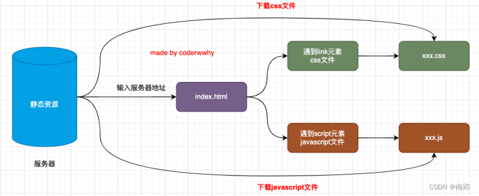
1. 浏览器渲染流程
浏览器的内核
我们经常说的浏览器内核指的是浏览器的排版引擎：
- 排版引擎（layout engine），也称为浏览器引擎（browser engine）、页面渲染引擎（rendering engine）或样版引擎。
- 也就是一个网页下载下来后，就是由我们的渲染引擎来帮助我们解析的。
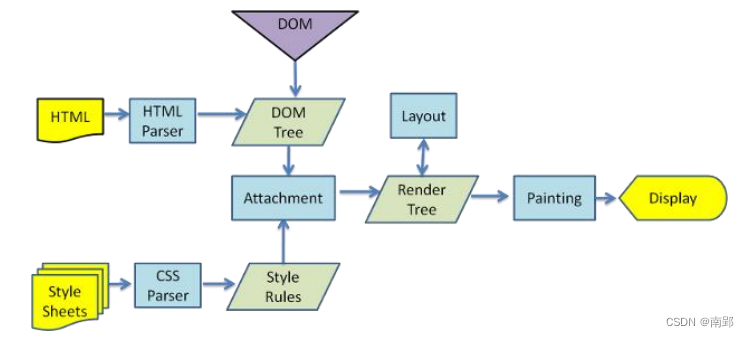
1.1 HTML 解析过程
- 因为默认情况下服务器会给浏览器返回index.html文件，所以解析HTML是所有步骤的开始
- 解析HTML，会==构建 DOM Tree==
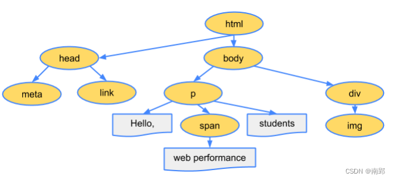
1.2 CSS 解析过程
- 在解析的过程中，如果遇到 CSS 的 link 元素，那么会由浏览器负责下载对应的 CSS 文件：
- 注意：下载 CSS 文件是不会影响 DOM 的解析的；
- 浏览器下载完 CSS 文件后，就会对 CSS 文件进行解析，解析出对应的规则树：
- 我们可以称之为 ==CSSOM==（CSS Object Model，CSS对象模型）；
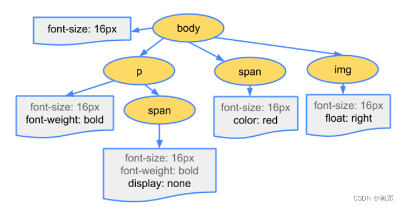
- 我们可以称之为 ==CSSOM==（CSS Object Model，CSS对象模型）；
1.3 构建 Render Tree
当有了 DOM Tree 和 CSSOM Tree 后，就可以两个结合来构建==Render Tree==了
注意：
- link 元素不会阻塞 DOM Tree 的构建过程，但是会阻塞 Render Tree 的构建过程
- 这是因为 Render Tree 在构建时，需要对应的 CSSOM Tree；
- Render Tree 和 DOM Tree 并不是一一对应的关系，比如对于
display = none的元素，压根不会出现在 render tree 中；
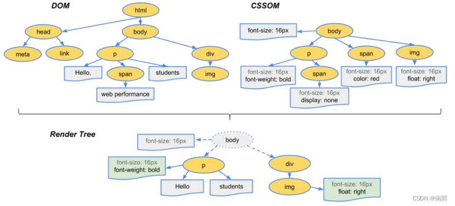
1.4 布局（layout）和绘制（paint）
- 第四步是在渲染树（Render Tree）上运行==布局==以计算每个节点的几何体
- 渲染树会表示显示哪些节点以及其他样式，但是不表示每个节点的尺寸、位置等信息；
- 布局是确定呈现树中所有节点的宽度、高度和位置信息；
- 第五步是将每个节点==绘制==到屏幕上
- 在绘制阶段，浏览器将布局阶段计算的每个frame转为屏幕上实际的像素点
- 包括将元素的可见部分进行绘制，比如文本、颜色、边框、阴影、替换元素（比如img）
2. 回流和重绘解析
==回流（reflow）：==
- 第一次确定节点的大小和位置，称之为布局（layout）。
- 之后对节点的大小、位置修改重新计算称之为回流。
==什么情况下引起回流呢？ == - 比如DOM结构发生改变（添加新的节点或者移除节点）；
- 比如改变了布局（修改了width、height、padding、font-size等值）
- 比如窗口resize（修改了窗口的尺寸等）
- 比如调用getComputedStyle方法获取尺寸、位置信息；
==重绘（repaint）：==
- 第一次渲染内容称之为绘制（paint）。
- 之后重新渲染称之为重绘。
==什么情况下会引起重绘呢？== - 比如修改背景色、文字颜色、边框颜色、样式等；
回流一定会引起重绘, 很消耗性能，开发中要尽量避免发送回流：
- 修改样式时尽量一次性修改
- 比如通过cssText修改，比如通过添加class修改
- 尽量避免频繁的操作DOM
- 我们可以在一个 DocumentFragment 或者父元素中将要操作的DOM操作完成，再一次性的操作；
- 尽量避免通过getComputedStyle获取尺寸、位置等信 息；
- 对某些元素使用
position=absolute或者fixed- 并不是不会引起回流，而是开销相对较小，不会对其他元素造成影响
3. 合成和性能优化
绘制的过程，可以将布局后的元素绘制到多个合成图层中。这是浏览器的一种优化手段
- 默认情况下，标准流中的内容都是被绘制在同一个图层中
- 某些特殊的CSS属性, 会生成新的合成图层，并且新的图层可以利用GPU来加速绘制（因为每个合成层都是单独渲染的）
- 分层确实可以提高性能，但是它以内存管理为代价，因此不应作为 web 性能优化策略的一部分过度使用。
可以形成新的合成层的属性：
- 3D transforms
- video、canvas、iframe
- opacity 动画转换时
- position: fixed
- will-change：一个实验性的属性，提前告诉浏览器元素可能发生哪些变化；
- animation 或 transition 设置了opacity、transform；
4. script 元素和页面解析的关系
浏览器在解析 HTML 的过程中，遇到了 script 元素会停止继续构建 DOM 树，首先下载 JavaScript 代码，并且执行 JavaScript 的脚本； 只有等到 JavaScript 脚本执行结束后，才会继续解析 HTML，构建 DOM 树；
这是因为 JavaScript 的作用之一就是操作 DOM，并且可以修改 DOM；如果我们等到 DOM 树构建完成并且渲染再执行 JavaScript，会造成严重的回流和重绘，影响页面的性能
但是这个也往往会带来新的问题，在目前的开发模式中（比如Vue、React），脚本往往比HTML页面更“重”，处理时间需要更长；所以会造成页面的解析阻塞，在脚本下载、执行完成之前，用户在界面上什么都看不到
4.1 defer 属性
告诉浏览器不要等待脚本下载，而继续解析HTML，构建DOM Tree
如果脚本提前下载好了，它会等待DOM Tree构建完成后，DOMContentLoaded事件之前先执行defer中的代码
多个带defer的脚本是可以保持正确的顺序执行的
从性能的角度最好放到head中
defer对于非外部引用的script元素，无效
4.2 async 属性
- async 属性也能让脚本不阻塞页面（与 defer 类似）；
- async 脚本不能保证顺序，它是独立下载、独立运行，不会等待其他脚本；
- async 不能保证在DOMContentLoaded之前或者之后执行
- defer 通常用于需要在文档解析后操作DOM的JavaScript代码，并且对多个script文件有顺序要求的；
- async 通常用于独立的脚本，对其他脚本，甚至DOM没有依赖的
5. 总结
浏览器输入一个URL到页面显示的过程：
- 首先通过DNS服务器进行域名解析，解析出对应的IP地址，然后从ip地址对应的主机发送http请求，获取对应的静态资源
- 默认情况服务器会返回index.html文件
- 然后浏览器内核开始解析HTML
- 首先会解析对应的html 生成DOM Tree
- 解析过程中，如果遇到css的link标签则会下载对应的css文件（下载css文件和生成DOM树同时进行）
- 下载完对应的css文件后会进行css解析 生成CSSOM( CSS object model)
- 当DOM Tree和CSSTree都解析完成之后 会进行合并用来生成Render Tree(渲染树)
- 初步生成的渲染树会显示节点以及部分样式，但是并不表示每个节点的尺寸、位置信息。于是进行布局来生成渲染树中节点的宽度、高度、位置信息
- 经过Layout之后，浏览器内核将布局时的每个frame转为屏幕上的每个像素点、将每个节点绘制到屏幕上
二、JavaScript 的运行原理
1. 深入 V8 引擎原理
浏览器内核是由两部分组成的，以webkit为例：
- WebCore：负责HTML解析、布局、渲染等等相关的工作；
- JavaScriptCore：解析、执行JavaScript代码；
另外一个强大的JavaScript引擎就是V8引擎
1.1 V8 引擎的架构
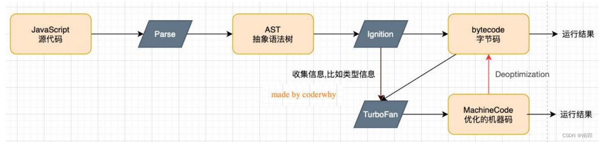
- Parse 模块会将JavaScript代码转换成AST（抽象语法树），这是因为解释器并不直接认识JavaScript代码；
- Ignition 是一个解释器，会将AST转换成ByteCode（字节码）
- 同时会收集TurboFan优化所需要的信息（比如函数参数的类型信息，有了类型才能进行真实的运算）；
- 如果函数只调用一次，Ignition会解释执行ByteCode；
- TurboFan 是一个编译器，可以将字节码编译为CPU可以直接执行的机器码；
- 如果一个函数被多次调用，那么就会被标记为热点函数，那么就会经过 TurboFan 转换成优化的机器码，提高代码的执行性能；
- 但是，机器码实际上也会被还原为ByteCode，这是因为如果后续执行函数的过程中，类型发生了变化（比如sum函数原来执行的是number类型，后来执行变成了string类型），之前优化的机器码并不能正确的处理运算，就会逆向的转换成字节码
在将JavaScript代码转换成AST（抽象语法树）的过程中：
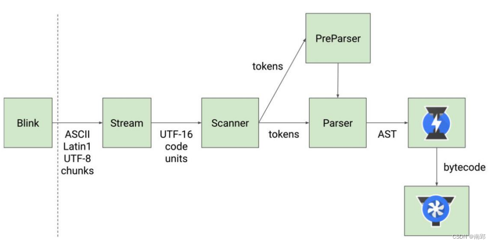
词法分析：
- 将对应的每一行的代码的字节流分解成有意义的代码块，代码块被称为词法单元
- token是记号化（tokenization）的缩写
- 词法分析器，也叫扫描器（scanner）
语法分析：
- 将对应的tokens分析成一个元素逐级嵌套的树， 这个树称之为抽象语法树
- 语法分析器也可以称之为 parser
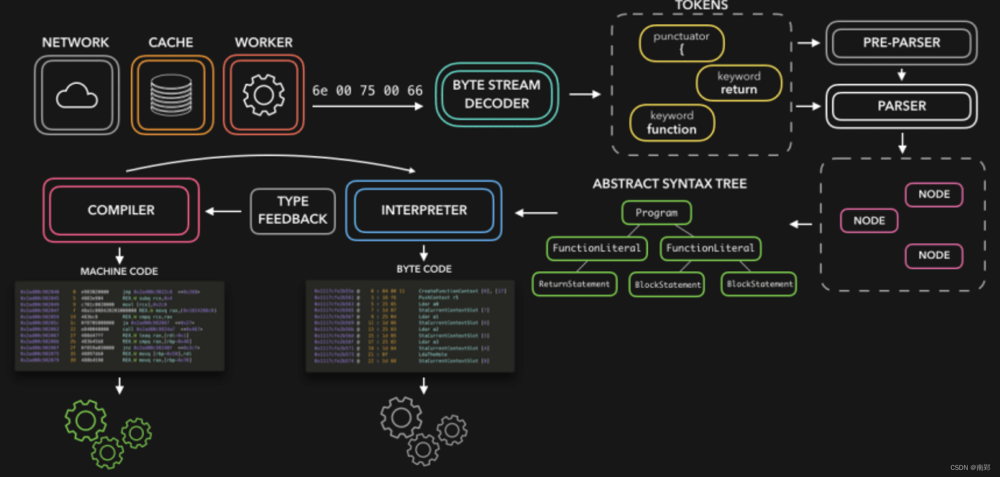
2. 深入 JS 执行原理
2.1 执行全局代码
2.1.1 初始化全局对象
js引擎在执行代码之前，会在堆内存中创建一个全局对象：Global Object（GO）
- 该对象所有的作用域都可以访问；
- 里面会包含
Date、Array、String、Number、setTimeout、setInterval等等； - 其中还有一个
window属性指向自己
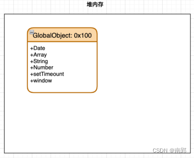
2.1.2 执行上下文
js引擎内部有一个执行上下文栈（Execution Context Stack，简称ECS），它是用于执行代码的调用栈。
全局的代码块为了执行会构建一个 Global Execution Context（GEC）； GEC会被放入到ECS中执行，其中内容包括：
- ==第一部分：==在代码执行前，在parser转成AST的过程中，会将全局定义的变量、函数等加入到Global Object中，但是并不会赋值
- 这个过程也称之为变量的作用域提升（hoisting）
- ==第二部分：==在代码执行中，对变量赋值，或者执行其他的函数
2.1.3 认识VO对象
每一个执行上下文会关联一个VO（Variable Object，变量对象），变量和函数声明会被添加到这个VO对象中。
当全局代码被执行的时候，VO就是GO对象
全局代码执行过程（执行前）的内存示意图：
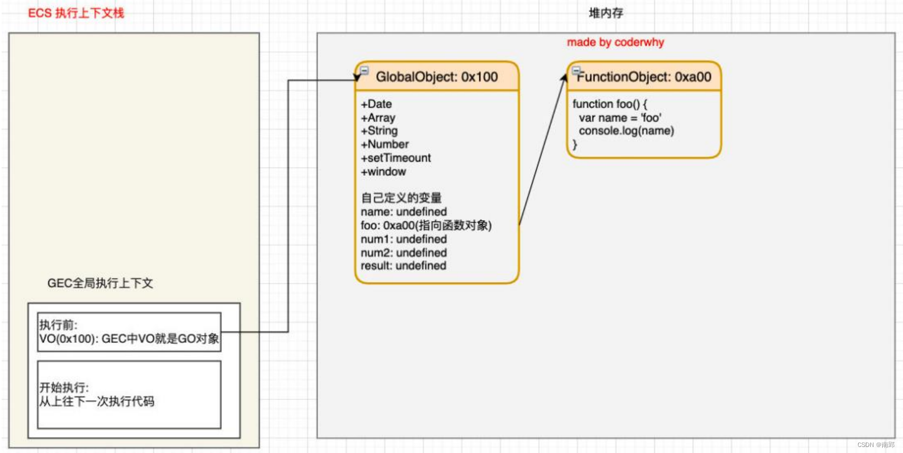
只有·会额外创建一个对象，obj、var bar = function{}这些在此阶段都视作变量
全局代码执行过程（执行后）的内存示意图：
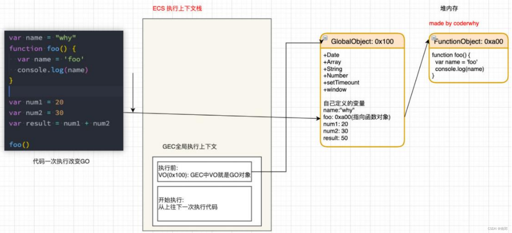
2.2 执行函数代码
在执行的过程中执行到一个函数时，就会根据函数体创建一个函数执行上下文（Functional Execution Context，简称FEC）， 并且压入到EC Stack中。
因为每个执行上下文都会关联一个VO，那么函数执行上下文关联的VO是什么呢？
- 当进入一个函数执行上下文时，会创建一个AO对象（Activation Object）；
- 这个AO对象会使用
arguments作为初始化，并且初始值是传入的参数； - 这个AO对象会作为执行上下文的VO来存放变量的初始化
函数的执行过程（执行前）的内存示意图：
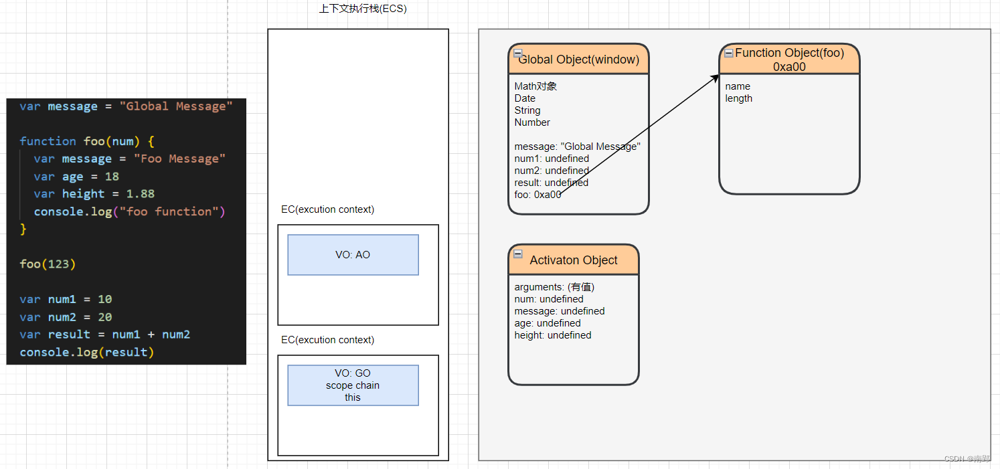
函数的执行过程（执行）的内存示意图：
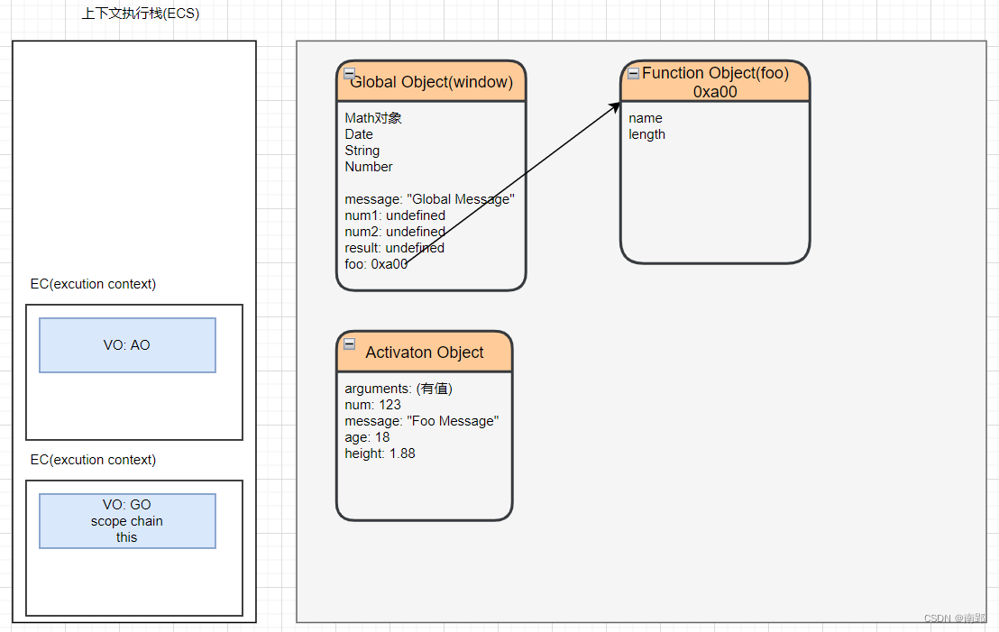
函数代码多次调用
foo第一次执行123：
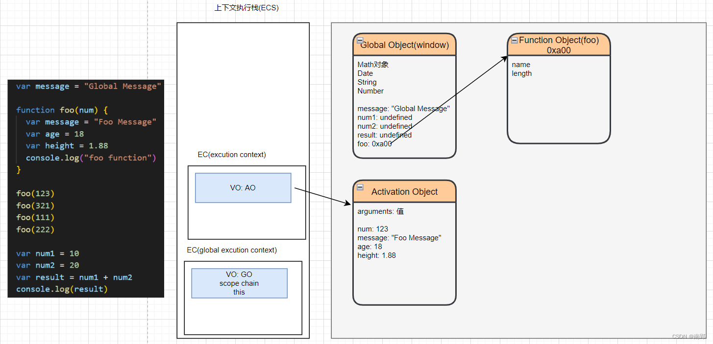foo第二次执行321：
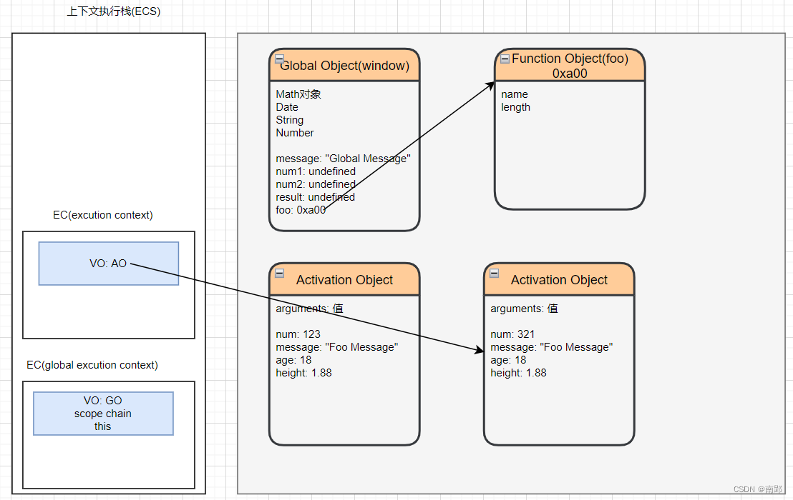
函数代码相互调用
foo和bar函数执行：
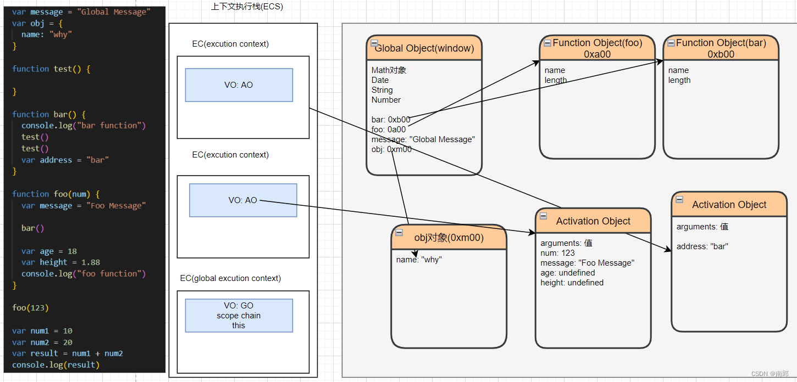bar函数执行完毕：
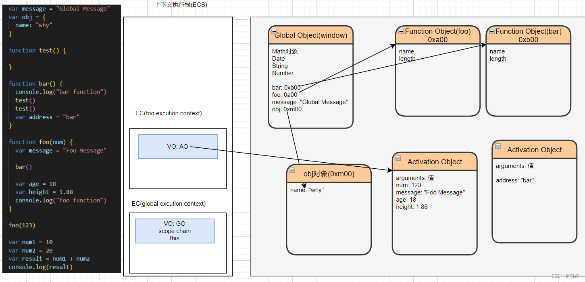foo函数执行完毕：
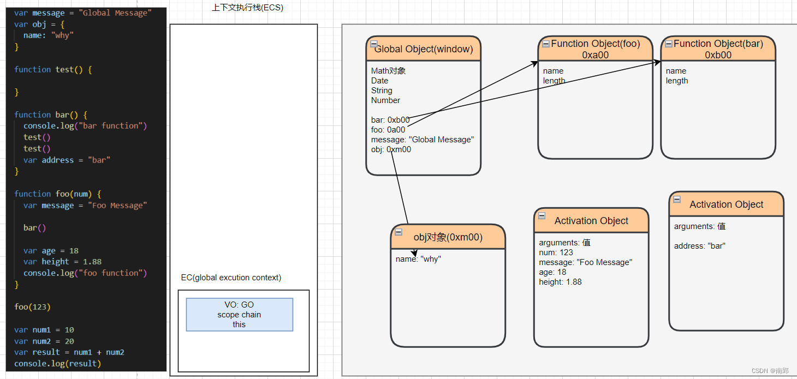
2.3 作用域、作用域链
当进入到一个执行上下文时，执行上下文也会关联一个作用域链（Scope Chain）
- 作用域链是一个对象列表，用于变量标识符的求值；
- 当进入一个执行上下文时，这个作用域链被创建，并且根据代码类型，添加一系列的对象；
函数变量的查找过程
函数有自己的message
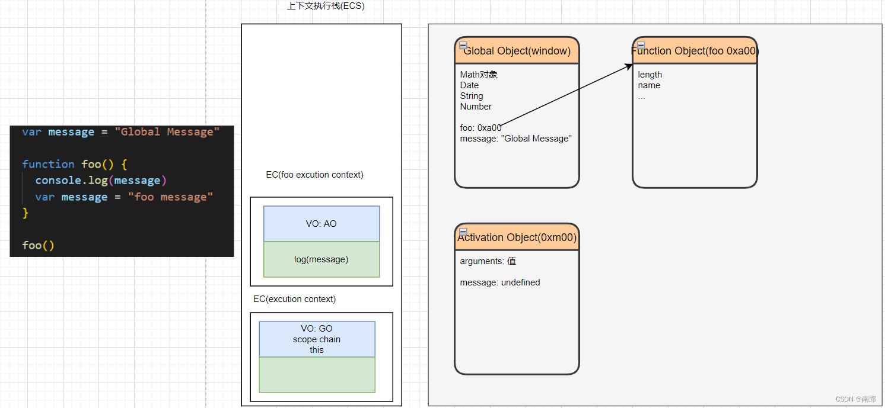函数没有自己的message
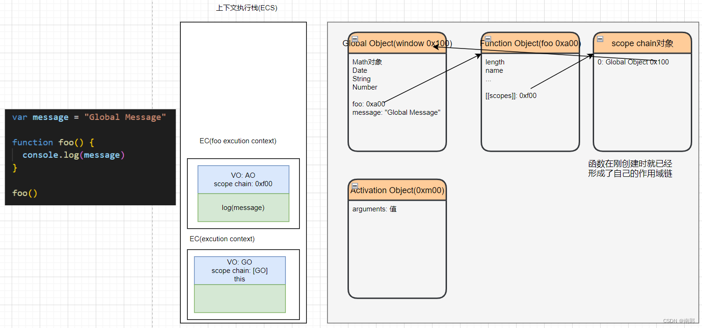
var message = "Global Message"
function foo() {
console.log(message)
}
foo()
var obj = {
name: "obj",
bar: function () {
var message = "bar message"
foo()
}
}
obj.bar() // Global Message 函数在刚创建时就已经形成了自己的作用域链，向上查找时为window函数代码多层嵌套
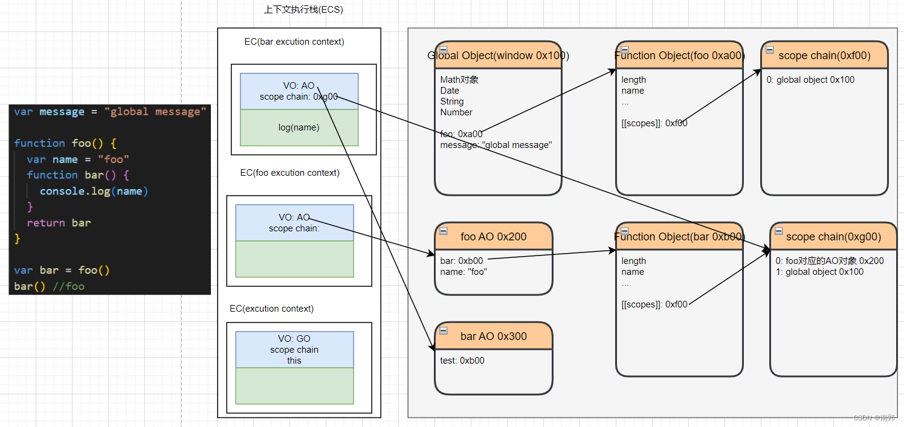
面试题
var n = 100
function foo1() {
console.log(n) //100 作用域链在定义时已经形成
}
function foo2() {
var n = 200
console.log(n) // 200
foo1()
}
foo2()var n = 100
function foo() {
console.log(n) // undefined
return
var n = 200 // 已经定义
}
foo()三、JS 的内存管理和闭包
1. 内存管理的理解
内存的管理都会有如下的生命周期：
第一步：分配申请你需要的内存（申请）；
第二步：使用分配的内存（存放一些东西，比如对象等）；
第三步：不需要使用时，对其进行释放
JS对于原始数据类型内存的分配会在执行时， 直接在栈空间进行分配；
JS对于复杂数据类型内存的分配会在堆内存中开辟一块空间，并且将这块空间的指针返回值 变量引用；
2. 垃圾回收机制GC算法
2.1 引用计数（了解）
- 当一个对象有一个引用指向它时，那么这个对象的引用就+1；
- 当一个对象的引用为0时，这个对象就可以被销毁掉；
这个算法有一个很大的弊端就是会产生循环引用
2.2 标记清除(可达性)
- 标记清除的核心思路是可达性
- 这个算法是设置一个根对象，垃圾回收器会定期从这个根开始，找所有从根开始有引用到的对象，对于那些没有引用到的对象，就认为是不可用的对象
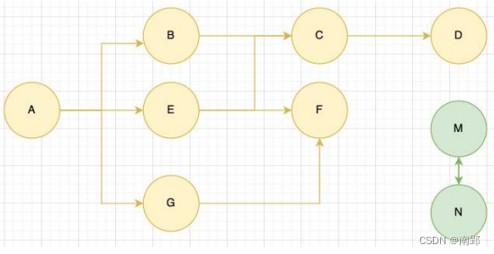
2.3 其他算法补充
V8引擎为了进行更好的优化，它在算法的实现细节上也结合一些其他的算法：
- 标记整理
- 回收期间同时会将保留的存储对象搬运汇集到连续的内存空间，从而整合空闲空间，避免内存碎片化
- 分带处理—— 对象被分成两组：“新的”和“旧的”
- 许多对象出现，完成它们的工作并很快死去，它们可以很快被清理
- 那些长期存活的对象会变得“老旧”，而且被检查的频次也会减少
- 增量收集
- 如果有许多对象，并且我们试图一次遍历并标记整个对象集，则可能需要一些时间，并在执行过程中带来明显的延迟。
- 所以引擎试图将垃圾收集工作分成几部分逐一进行处理，这样会有许多微小的延迟而不是一个大的延迟
- 闲时收集
- 垃圾收集器只会在 CPU 空闲时尝试运行，以减少可能对代码执行的影响
3. 闭包的概念理解
一个函数和对其周围状态（词法环境）的引用捆绑在一起，这样的组合就是闭包（closure）
- 一个普通的函数function，如果它可以访问外层作用域的自由变量，那么这个函数和周围环境就是一个闭包；
- 从广义的角度来说：JavaScript中的函数都是闭包
- 从狭义的角度来说：JavaScript中一个函数，如果访问了外层作用域的变量，那么它是一个闭包
3.1 闭包的执行过程
第一次调用createAdder
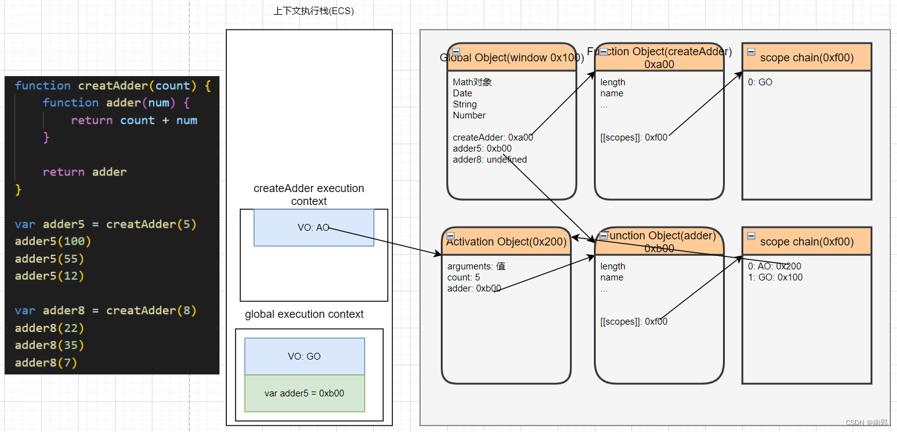执行adder5
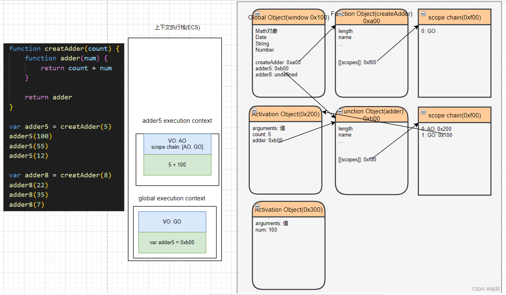adder5执行完成
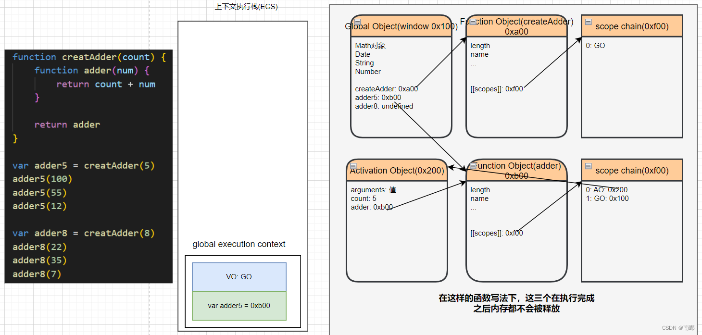第二次调用createAdder
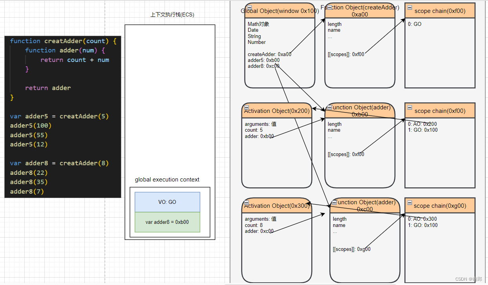
3.2 闭包的内存泄漏和释放
- 在上面的案例中，如果后续我们不再使用
adder8函数了，那么该函数对象应该要被销毁掉，并且其引用着的父作用域AO也应该被销毁掉； - 但是目前因为在全局作用域下
adder8变量对0xb00的函数对象有引用，而0xb00的作用域中AO（0x200）有引用，所以最终会造成这些内存都是无法被释放的； - 所以我们经常说的闭包会造成内存泄露，其实就是刚才的引用链中的所有对象都是无法释放的；
此时，将 adder8 = null 即可释放内存
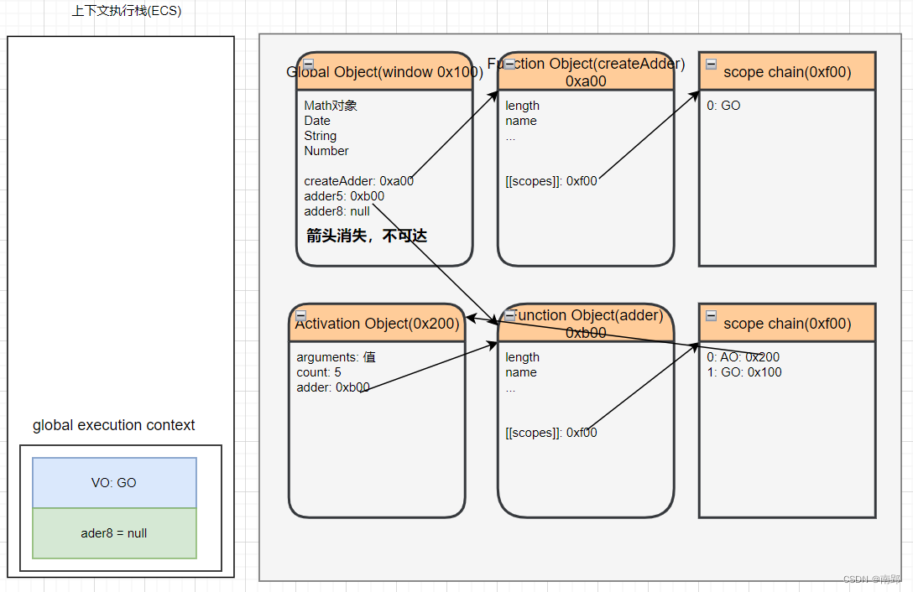